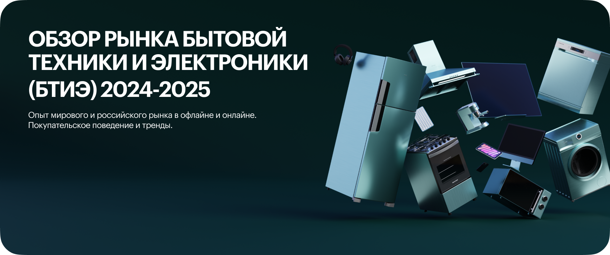
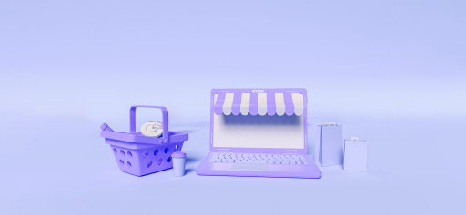

Обзор рынка бытовой
техники и электроники
(БТиЭ) 2024-2025
Опыт мирового и российского рынка в офлайне и онлайне.
Покупательское поведение и тренды.
-30% до 20 апреля
осталось 10 дней до конца скидки
Рынок бытовой техники
Рынок электроники
Что внутри обзора
600+ страниц с аналитикой рынка, оценкой объема, динамикой каналов продаж, потребительскими сегментами и выводами для бизнеса.
- Разделы по категориям и каналам продаж
- Рейтинги игроков и сравнительные таблицы
- Готовые выводы для принятия решений
1 468 страниц данных
900+
графиков
50+
таблиц
Кому будет полезно
e-commerce директорам
бренд-менеджерам
дистрибьюторам
маркетингу
стратегам
Понять все ключевые данные рынка БТиЭ в одном отчете
Понять, какие ниши и бренды продолжают расти в БТиЭ
Сверить текущую стратегию развития с динамикой категорий и каналов
Получить новый контекст о рынке бытовой техники без ручного сбора данных
Увидеть динамику и влияние маркетплейсов рынка БТиЭ
Эффективнее запустить, измерить и масштабировать рыночный рост
Содержание обзора
рынок БТиЭ
бренды
e-commerce
потребители
тренды
01
Мировой рынок потребительской электроники
- Динамика рынка и прогнозы
- Ключевые производители и регионы
- Технологические драйверы спроса
02
Мировой рынок бытовой техники
- Крупная бытовая техника
- Малая бытовая техника
- Сезонные изменения спроса
- Каналы продаж
- Ценовые сегменты
- Глобальные тренды
03
Российский рынок бытовой техники и электроники
- Размер рынка и категории
- Портреты покупателей
- Динамика продаж
- Основные игроки
- Импорт и локализация
- Распределение каналов
04
Мировой e-commerce рынок бытовой техники и электроники
- Развитие marketplace-модели и direct-to-consumer каналов
- Сравнение digital-продаж по регионам
- Покупательские сценарии и точки роста
05
Российский e-commerce рынок БТиЭ
- Структура продаж онлайн
- Роль маркетплейсов
- Категории роста и сезонность
06
Покупательское поведение на рынке БТиЭ
- Выбор брендов и критерии покупки
- Влияние отзывов и контента
- Роль рассрочки и сервисов
- Покупательские барьеры
- Ценовая чувствительность
- Поводы для обновления техники
07
Тренды на рынке БТиЭ
- Умная техника и экосистемы
- Энергоэффективность и сервисная модель
- Изменение потребительских сценариев
Нашими обзорами пользуются
avito
erid
nielsen
ozon
yandex
tele2
mvideo
sber
wildberries
hoff
dns
aliexpress
metro
rbc
Форматы и стоимость обзора
Публичная версия
Бесплатно
Скачать обзорный блок- Блок 1: мировой рынок потребительской электроники
- Блок 2: мировой и российский рынок бытовой техники
- Фрагменты выводов и структуры исследования
Полный обзор
70 000 ₽ 100 000 ₽
Получить полный обзор- Блок 1: мировой рынок потребительской электроники
- Блок 2: мировой рынок бытовой техники
- Блок 3: российский рынок бытовой техники и электроники
- Блок 4: мировой и российский e-commerce рынок
- Блок 5: покупательское поведение рынка БТиЭ
- Блок 6: тренды рынка бытовой техники и электроники
Отзывы на прошлые обзоры
Эти отчеты уже помогли компаниям лучше оценить рынок, проверить гипотезы и сформировать план действий.
4 500+Farfers
Аналитика помогла быстро собрать контекст и аргументировать стратегические решения внутри команды.
Александр Соловьев
директор по развитию
Mango
Получили структурированный обзор рынка и понятные ориентиры по e-commerce, категориям и трендам.
Мария Иванова
руководитель маркетинга
Что еще можно изучить

Юзабилити-аудит e-commerce и сервисов
Помогает найти точки роста в интерфейсе и пути клиента
250 000 ₽
проектный формат
Что исследуем в e-commerce
Выпускаем отраслевые e-commerce отчеты
Смотрим рынок, покупателей, каналы и точки роста

Стоимость обзора рынка (БТиЭ) 2024-2025
- полная версия исследования
- все блоки содержания
- таблицы, графики и выводы
- доступ к материалам после оплаты